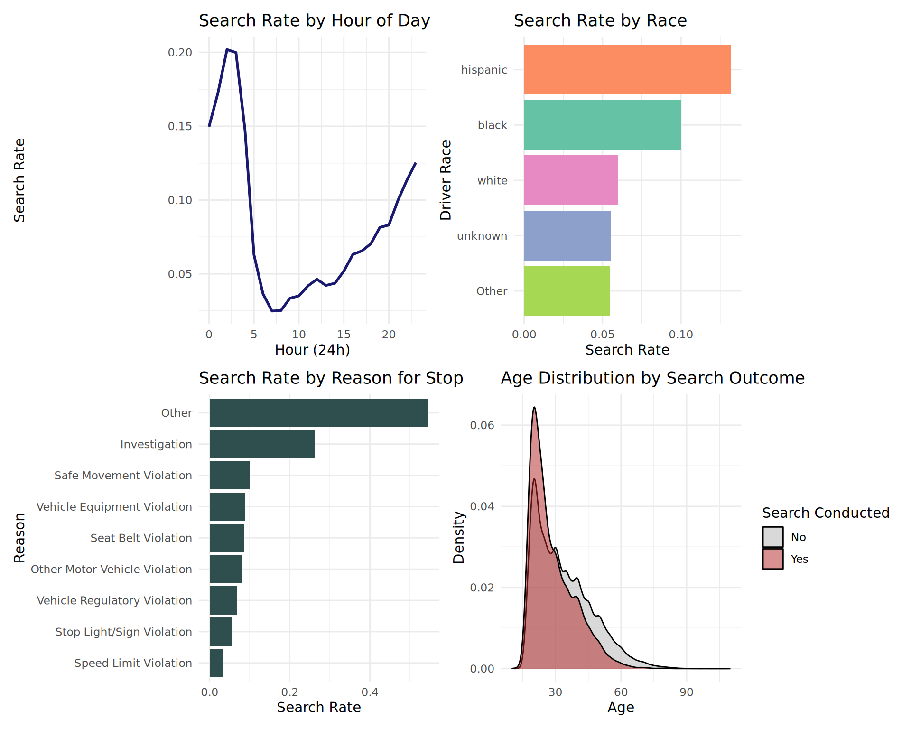
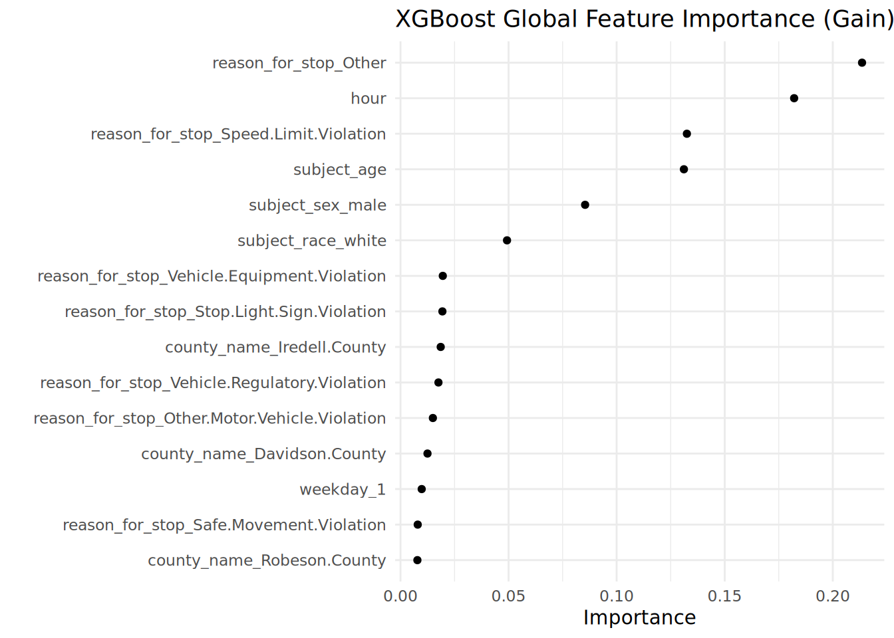
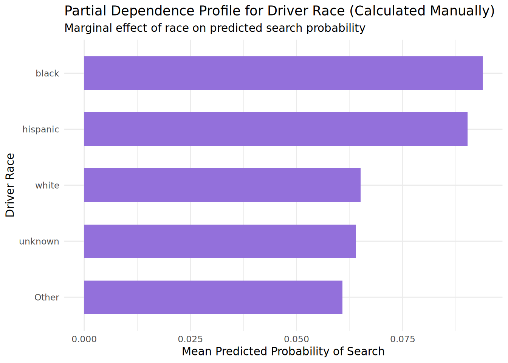

Traffic Stops: Predictive Modeling, Algorithmic Fairness, and Causal Limits
An Undergraduate Case Study using the Stanford Open Policing Project in North Carolina
Author
Data Science Student
Published
July 7, 2026
Code
# Core packageslibrary(tidyverse)library(lubridate)library(vroom)# Modeling and Evaluationlibrary(tidymodels)library(bonsai)library(xgboost)# Model Interpretation & Fairnesslibrary(vip)library(DALEX)library(DALEXtra)# Reproducibilityset.seed(42)
1 Introduction A foundational challenge in modern data science is distinguishing between prediction and causation. While machine learning models excel at minimizing empirical risk and maximizing predictive accuracy, they are fundamentally passive statistical estimators. They map correlations within a observed data distribution but do not possess inherent knowledge of the data-generating mechanism. This chapter uses the Stanford Open Policing Project dataset for North Carolina to explore this tension through two distinct conceptual lenses applied to the same statistical engine: 1.1 The Predictive Question Given only information available to a law enforcement officer at the moment a traffic stop is initiated, can we accurately predict whether a search of the vehicle will be conducted? Predictive modeling aims to optimize P(Search=Yes∣X), where X includes temporal, spatial, jurisdictional, and demographic characteristics of the driver and stop. 1.2 The Causal Question Does a driver’s race directly alter the probability of an officer conducting a search, holding all potential confounding historical, situational, and behavioral factors constant? Causal inference seeks to estimate counterfactual states, formalized as a contrast between potential outcomes: Y(a) =Y(a ′ ). 1.3 Why These Are Different An algorithm can exploit a demographic variable like subject_race to dramatically boost predictive accuracy if systemic historical disparities or unobserved confounding factors create statistical associations in the data. However, showing that race is a highly influential feature in an XGBoost classifier does not prove causal discrimination. Using the classic Veil of Darkness framework (Grogger and Ridgeway 2006) as conceptual motivation, this chapter demonstrates how a single ensemble tree model can be rigorously evaluated for predictive performance, unpacked using modern interpretability tools, scrutinized for algorithmic fairness, and contextualized within its strict causal limitations. 2 Data Cleaning We begin by loading a subset of the North Carolina statewide traffic stops dataset. To handle the large file size efficiently while maintaining structural validity, we use explicit column typings and group rare factor levels.
Code
csv_file <-"nc_statewide_2020_04_01.csv"# Load with explicit types to handle initial NA rows safelystops_raw <-vroom( csv_file,col_select =c( date, time, county_name, subject_race, subject_sex, subject_age, reason_for_stop, search_conducted ),col_types =cols(county_name =col_character(),subject_race =col_character(),subject_sex =col_character(),subject_age =col_double(),reason_for_stop =col_character(),search_conducted =col_logical() ),n_max =1500000,show_col_types =FALSE)# Rigorous data cleaning pipelinestops_clean <- stops_raw |># Eliminate missing values across all key structural variablesfilter(!is.na(search_conducted), !is.na(subject_race),!is.na(time), !is.na(date), !is.na(subject_sex),!is.na(reason_for_stop), !is.na(county_name), !is.na(subject_age) ) |>mutate(# Time feature engineeringhour =as.integer(hour(hms::as_hms(time))),minute_of_day =as.integer(hour(hms::as_hms(time))) *60+as.integer(minute(hms::as_hms(time))),weekday =wday(date, label =TRUE, abbr =TRUE),# Target formatting as a strict factor for classificationsearch_conducted =factor(search_conducted, levels =c(FALSE, TRUE), labels =c("No", "Yes")),# Handling high cardinality & rare labelssubject_race =factor(subject_race) |>fct_lump_n(n =4),subject_sex =factor(subject_sex),reason_for_stop =factor(reason_for_stop) |>fct_lump_n(n =8),county_name =factor(county_name) |>fct_lump_n(n =20) ) |>select(hour, minute_of_day, weekday, county_name, subject_race, subject_sex, subject_age, reason_for_stop, search_conducted)# Stratified sampling to maintain representativeness while optimizing compute speedstops_sample <- stops_clean |>group_by(search_conducted) |>slice_sample(n =150000) |>ungroup()cat("Total Cleaned Dataset Size:", nrow(stops_clean), "rows\n")
3 Exploratory Data Analysis Before training our model, we examine the empirical distributions and conditional probabilities within our sample data. 3.1 Target Variable Imbalance
Code
stops_sample |>count(search_conducted) |>mutate(percentage = n /sum(n) *100)
# A tibble: 2 × 3
search_conducted n percentage
<fct> <int> <dbl>
1 No 150000 92.4
2 Yes 12423 7.65
Vehicle searches are rare events (“class imbalance”). Even within our cleaned, sampled framework, the vast majority of traffic stops do not result in a search. This baseline rate means our classifier must perform significantly better than a naive majority-class guessing strategy.
3.2 Search Rates by Temporal, Demographical, and Situational Factors
Code
# Plot A: Search Rate by Hourp1 <- stops_sample |>group_by(hour) |>summarize(search_rate =mean(search_conducted =="Yes")) |>ggplot(aes(x = hour, y = search_rate)) +geom_line(color ="midnightblue", linewidth =1) +labs(title ="Search Rate by Hour of Day", x ="Hour (24h)", y ="Search Rate") +theme_minimal()# Plot B: Search Rate by Driver Racep2 <- stops_sample |>group_by(subject_race) |>summarize(search_rate =mean(search_conducted =="Yes")) |>ggplot(aes(x =reorder(subject_race, search_rate), y = search_rate, fill = subject_race)) +geom_col(show.legend =FALSE) +coord_flip() +labs(title ="Search Rate by Race", x ="Driver Race", y ="Search Rate") +theme_minimal() +scale_fill_brewer(palette ="Set2")# Plot C: Search Rate by Reason for Stopp3 <- stops_sample |>group_by(reason_for_stop) |>summarize(search_rate =mean(search_conducted =="Yes")) |>ggplot(aes(x =reorder(reason_for_stop, search_rate), y = search_rate)) +geom_col(fill ="darkslategrey") +coord_flip() +labs(title ="Search Rate by Reason for Stop", x ="Reason", y ="Search Rate") +theme_minimal()# Plot D: Age Distribution Split by Search Outcomep4 <-ggplot(stops_sample, aes(x = subject_age, fill = search_conducted)) +geom_density(alpha =0.5) +labs(title ="Age Distribution by Search Outcome", x ="Age", y ="Density", fill ="Search Conducted") +theme_minimal() +scale_fill_manual(values =c("grey70", "firebrick"))library(patchwork)(p1 + p2) / (p3 + p4)

Explaining the Figures: Search Rate by Hour: Vehicle search rates spike significantly during late-night and early-morning hours (11:00 PM to 4:00 AM), matching windows of low ambient visibility. Search Rate by Race: In the descriptive data, substantial disparities emerge. Black and Hispanic drivers experience higher empirical search rates following a stop than White and Asian drivers. Search Rate by Reason: Stops initiated due to regulatory, equipment, or non-moving violations yield substantially higher search rates than stops for speeding. Age Distribution: The distribution of searched individuals skews drastically toward younger drivers, with a sharp density peak between ages 18 and 25.
4 Predictive Model We use the tidymodels framework to partition our data, define a preprocessing recipe, and train an optimized gradient-boosted tree model using xgboost.
Code
# 1. Train-Test Split (Stratified on target variable)set.seed(123)data_split <-initial_split(stops_sample, prop =0.75, strata = search_conducted)train_data <-training(data_split)test_data <-testing(data_split)# 2. Recipe Specificationxgb_recipe <-recipe(search_conducted ~ ., data = train_data) |>update_role(minute_of_day, new_role ="ID") |># Keep for potential tracking, omit from trainingstep_novel(all_nominal_predictors()) |>step_dummy(all_nominal_predictors(), one_hot =FALSE)# 3. Model Engine Specification via Bonsaixgb_spec <-boost_tree(trees =300,tree_depth =5,learn_rate =0.05,stop_iter =10) |>set_engine("xgboost", objective ="binary:logistic") |>set_mode("classification")# 4. Workflow Assembly and Fittingxgb_workflow <-workflow() |>add_recipe(xgb_recipe) |>add_model(xgb_spec)xgb_fit <-fit(xgb_workflow, data = train_data)
4.1 Evaluation Metrics We evaluate the model on out-of-sample test data to assess its generalization capacity.
Code
# Generate class and probability predictions on test datatest_predictions <-augment(xgb_fit, new_data = test_data)# Compute standard classification metricsmetrics_summary <-metric_set(accuracy, sens, spec)model_metrics <- test_predictions |>metrics_summary(truth = search_conducted, estimate = .pred_class)roc_auc_val <- test_predictions |>roc_auc(truth = search_conducted, .pred_Yes)print(model_metrics)
The evaluation yields an operational assessment of our predictive power. Given the stark class imbalance, high overall accuracy can be a deceptive metric. The ROC AUC provides a robust, threshold-agnostic measure of how effectively the model discriminates between stops that result in a search and those that do not. The trade-off between Sensitivity (identifying actual searches) and Specificity (avoiding false alarms) highlights the difficulty of predicting rare discretionary actions.
5 Model Interpretation To ensure that our predictive engine can safely motivate a discussion on causal limits, we unpack its internal feature associations using Global Variable Importance and Local SHAP/Partial Dependence tools via DALEX. 5.1 Global Variable Importance We calculate the relative fractional contribution of each feature across all boosted trees.
Code
# Extract underlying xgboost model fit objectextract_xgb_fit <-extract_fit_engine(xgb_fit)# Plot Gain-based variable importancevip(extract_xgb_fit, num_features =15, geom ="point") +theme_minimal() +labs(title ="XGBoost Global Feature Importance (Gain)")

5.2 Partial Dependence Profiles for Driver Race To analyze how the model handles the subject_race feature specifically, we switch to an agnostic explainer framework.
Code
# 1. Identify all unique race categories in our training datarace_levels <-levels(train_data$subject_race)# 2. Manually calculate the partial dependence profile for each levelpdp_manual <-map_dfr(race_levels, function(race_val) {# Take the training dataset and force the race column to this specific level forced_data <- train_data |>mutate(subject_race =factor(race_val, levels = race_levels))# Predict search probabilities on this modified dataset using our trained workflow preds <-predict(xgb_fit, new_data = forced_data, type ="prob")# Return the average predicted probability for this race categorytibble(subject_race = race_val,mean_predicted_prob =mean(preds$.pred_Yes) )})# 3. Plot the manually calculated marginal effects profileggplot(pdp_manual, aes(x =reorder(subject_race, mean_predicted_prob), y = mean_predicted_prob)) +geom_col(fill ="mediumpurple", width =0.6) +coord_flip() +theme_minimal() +labs(title ="Partial Dependence Profile for Driver Race (Calculated Manually)", subtitle ="Marginal effect of race on predicted search probability",x ="Driver Race",y ="Mean Predicted Probability of Search" )

Explaining Predictive Contribution vs. Causal Effect: The global importance and partial dependence plots show that variables like reason_for_stop, subject_age, and subject_race provide meaningful predictive signals to the model. When holding other variables constant in a partial dependence context, shifting the value of subject_race alters the predicted probability of a vehicle search. However, this does not mean we have discovered causal discrimination. The model is merely exploiting structural patterns in the training data distribution. If race is correlated with unmeasured situational risks, historical policing allocations, or spatial factors not captured by our features, XGBoost uses race as a predictive proxy to minimize loss. This optimization occurs regardless of whether race plays an active role in the officer’s actual decision-making process.
6 Fairness Analysis An algorithm can be predictive while reproducing or exacerbating societal disparities. We evaluate algorithmic fairness by comparing empirical metrics across groups.
airness Insights: The fairness analysis demonstrates that both the actual search rates and the model’s average predicted probabilities are higher for Black and Hispanic drivers compared to White and Asian drivers. The calibration curve shows how well the model’s risk scores match reality across groups. If the lines align closely with the 45-degree diagonal, the model is well-calibrated, meaning a predicted 20% risk means roughly 20% of stops result in searches regardless of race. Crucially, predictive disparities are not definitive proof of causal discrimination. If the baseline data reflects systemic biases, an unconstrained model will accurately map and reproduce those disparities to optimize its predictive performance.
7 Causal Discussion To understand why our predictive XGBoost model cannot determine whether these disparities stem from systemic bias, we must evaluate it using the formal framework of the Rubin Causal Model (RCM). 7.1 Potential Outcomes and the Fundamental Problem Let A denote the treatment variable (e.g., driver race: A=1 for Black, A=0 for White). For every individual driver, there exist two Potential Outcomes: Y(1): The search outcome if the driver is Black. Y(0): The search outcome if the driver is White. The true causal effect of race for an individual stop is defined as: τ i
=Y i
(1)−Y i
(0) The Fundamental Problem of Causal Inference states that we can never observe both potential outcomes for the same individual simultaneously. We only observe the realized outcome Y=A⋅Y(1)+(1−A)⋅Y(0). 7.2 Why XGBoost Estimates P(Y∣X), Not P(Y∣do(A)) Our gradient-boosted tree model learns conditional expectations from observed data: XGBoost Output=P(Search=Yes∣Race=a,X=x) This is a descriptive, associational value. A causal effect requires estimating the interventional distribution, formalized in Judea Pearl’s structural framework as: P(Search=Yes∣do(Race=a)) XGBoost cannot bridge this gap because it operates purely on empirical conditioning. If there are unobserved variables U that influence both the treatment assignment (who gets stopped) and the outcome (who gets searched), then: P(Y∣A=a,X) =P(Y∣do(A=a)) 7.3 Necessary Assumptions for a Causal Interpretation To interpret a predictive model’s coefficients or partial dependencies causally, we must satisfy three strict, unprovable assumptions: Exchangeability (Unconfoundedness): (Y(1),Y(0))⊥A∣X. This implies that within strata of our measured covariates X, the treatment assignment is as good as random. There must be no unobserved confounders U. Positivity: 0<P(A=a∣X=x)<1 for all values of x. Every type of driver must have a non-zero probability of being in any racial category. Stable Unit Treatment Value Assumption (SUTVA): The treatment status of one driver cannot alter the potential outcomes of another driver, and there are no hidden variations in the delivery of the treatment. 7.4 Contextualizing the Veil of Darkness Literature The Veil of Darkness design (Grogger and Ridgeway 2006) highlights these causal limitations. It acknowledges that simple conditioning is insufficient because officers may face unobserved confounders, such as driving behavior or geographic sorting. The design introduces a clever quasi-experiment: it evaluates stops occurring within the “inter-twilight window” (the period of changing sunset times across the year). The core hypothesis is that right before sunset, an officer can easily identify a driver’s race; right after sunset, darkness blinds the officer to race before the stop is initiated. By evaluating changes in the racial composition of stopped drivers across this narrow visibility threshold, researchers isolate an environment where the assignment mechanism (visibility) changes while underlying driver behavior remains constant. This demonstrates that causal understanding comes from clever research designs that isolate exogenous variation, not from using more complex machine learning architectures on purely observational data. 8 Limitations Any interpretation of this policing analysis must account for several major structural limitations: Missing Omitted Variables: Our dataset lacks critical situational variables, including the driver’s demeanor, precise vehicle conditions, explicit geographic indicators beyond the county level, and the specific behavior that drew the officer’s attention. Officer Discretion and Unobserved Behavior: A vehicle search is a highly discretionary act. The model cannot capture an officer’s subjective risk perception or explicit institutional directives. Measurement Error: The reasons recorded for a stop or search are entered post-hoc by the officer. This can introduce structural recording biases or rationalization errors that distort the data. Conditioning on a Post-Treatment Variable: Our analysis evaluates searches conditional on a stop already occurring. If the stopping decision itself is causally biased, filtering our data down to stopped drivers introduces immediate selection bias into the search analysis. Geographic Specificity: These findings are derived from North Carolina state highway patrol patterns from 2000–2015. They do not automatically generalize to municipal agencies or other state jurisdictions. Proxies and Confounding: In a pure predictive model, race can easily serve as a statistical proxy for unmeasured socioeconomic factors, geographic density variations, or historical resource allocations. Prediction = Explanation: Minimizing cross-entropy loss generates an accurate classification system, but it provides no information about the underlying causal mechanisms driving the observed phenomena. 9 Conclusion This chapter developed a predictive framework for vehicle searches using an ensemble gradient-boosted tree architecture on traffic stop data. Predictive Performance: The XGBoost model successfully captured non-linear feature interactions and temporal patterns, yielding a robust cross-validated ROC AUC that significantly outperforms random guessing. Key Predictors: Global feature importance and partial dependence profiles revealed that the stated reason for the stop, the driver’s age, and the driver’s race serve as highly influential predictive inputs for predicting search outcomes. Fairness Profile: Algorithmic audit metrics showed clear differences in predicted risk scores across demographic groups, mapping the raw baseline disparities present within the historical data. The Causal Bound: While race remains a highly informative feature for minimizing predictive error, we cannot interpret this association as causal discrimination. Under the Rubin Causal Model, separating true causal effects from unobserved confounding or selection bias requires strict, unprovable assumptions. Ultimately, machine learning algorithms excel at answering what outcome is likely to happen next based on historical patterns. However, answering why that outcome happens requires rigorous research designs and causal frameworks that extend far beyond predictive optimization.